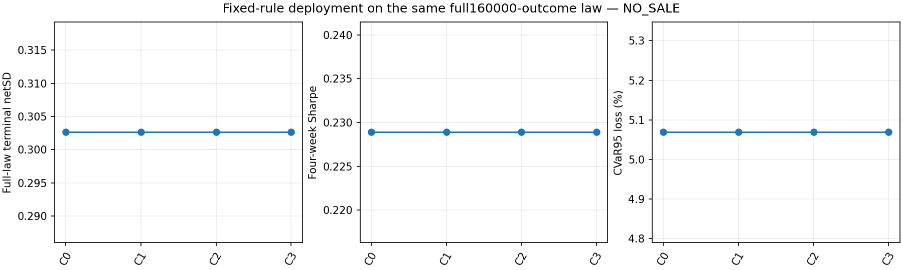

4. Results
Completed 21 of 78 scheduled trials. Partial results only; remaining trials are not presented as calculated.
Configuration key
| ID | Weekly/terminal branching | Decision nodes N | Terminal leaves L |
|---|---|---|---|
| C0 | 20 / 20 / 20 / 20 | 8421 | 160000 |
| C1 | 20 / 20 / 20 / 10 | 8421 | 80000 |
| C2 | 20 / 20 / 20 / 5 | 8421 | 40000 |
| C3 | 20 / 20 / 20 / 4 | 8421 | 32000 |
NO_SALE


| ID | Time s: mean ± SD | Range s | Energy Wh: mean ± SD | Range Wh | Speed-up |
|---|---|---|---|---|---|
| C0 | 4.815 ± 0.015 (n=3) | 4.804–4.832 | — ± — (n=0) | —–— | 1.00 |
| C1 | 4.967 ± 0.197 (n=3) | 4.838–5.194 | 0.1498 ± — (n=1) | 0.1498–0.1498 | 0.97 |
| C2 | 4.755 ± 0.200 (n=3) | 4.631–4.986 | 0.1389 ± — (n=1) | 0.1389–0.1389 | 1.01 |
| C3 | 4.737 ± 0.230 (n=3) | 4.479–4.922 | 0.1349 ± — (n=1) | 0.1349–0.1349 | 1.02 |
Common full-law performance
| ID | netSD | Sharpe | Rachev | Sortino | Mean % |
|---|---|---|---|---|---|
| C0 | 0.3026 | 0.2289 | 1.0557 | 0.3498 | 0.4375 |
| C1 | 0.3026 | 0.2289 | 1.0557 | 0.3498 | 0.4375 |
| C2 | 0.3026 | 0.2289 | 1.0557 | 0.3498 | 0.4375 |
| C3 | 0.3026 | 0.2289 | 1.0557 | 0.3498 | 0.4375 |
| ID | CVaR95 % | Loss probability % | Worst return % | Expected weekly DD % | Turnover EUR |
|---|---|---|---|---|---|
| C0 | 5.0689 | 27.0517 | -19.6004 | 0.6246 | 1000.00 |
| C1 | 5.0689 | 27.0517 | -19.6004 | 0.6246 | 1000.00 |
| C2 | 5.0689 | 27.0517 | -19.6004 | 0.6246 | 1000.00 |
| C3 | 5.0689 | 27.0517 | -19.6004 | 0.6246 | 1000.00 |
Approximation and initial-decision changes
| ID | Full-law netSD Δ | Reduced-law netSD | Changed assets | Half-L1 EUR | Cost/quality dominated |
|---|---|---|---|---|---|
| C0 | 0.0000 | 0.3026 | 0 | 0.00 | False |
| C1 | 0.0000 | 0.3013 | 0 | 0.00 | True |
| C2 | 0.0000 | 0.3113 | 0 | 0.00 | True |
| C3 | 0.0000 | 0.2914 | 0 | 0.00 | False |
Fitted equations, parameters and errors
Not enough completed configurations for fitting.
Separated time and energy scopes
| ID | Scope | Time s: mean ± SD | Energy Wh: mean ± SD |
|---|---|---|---|
| C0 | tree reduction | 0.002 ± 0.000 (n=3) | — ± — (n=0) |
| C0 | reduced reference preparation | 2.600 ± 0.043 (n=3) | 0.0811 ± 0.0011 (n=3) |
| C0 | solver initialisation | 0.066 ± 0.003 (n=3) | 0.0030 ± — (n=1) |
| C0 | optimisation | 2.146 ± 0.045 (n=3) | 0.0778 ± 0.0019 (n=3) |
| C0 | common full policy evaluation | 0.228 ± — (n=1) | 0.0091 ± — (n=1) |
| C0 | Startup/loading/supervision residual | 4.429 ± 0.097 (n=3) | — ± — (n=0) |
| C1 | tree reduction | 0.827 ± 0.003 (n=3) | 0.0187 ± 0.0004 (n=3) |
| C1 | reduced reference preparation | 2.044 ± 0.032 (n=3) | 0.0623 ± 0.0012 (n=3) |
| C1 | solver initialisation | 0.057 ± 0.002 (n=3) | 0.0026 ± — (n=1) |
| C1 | optimisation | 2.039 ± 0.180 (n=3) | 0.0705 ± 0.0061 (n=3) |
| C1 | common full reference preparation | 1.721 ± — (n=1) | 0.0689 ± — (n=1) |
| C1 | common full policy evaluation | 0.153 ± — (n=1) | 0.0061 ± — (n=1) |
| C1 | Startup/loading/supervision residual | 4.411 ± 0.256 (n=3) | 0.1158 ± — (n=1) |
| C2 | tree reduction | 0.781 ± 0.004 (n=3) | 0.0176 ± 0.0005 (n=3) |
| C2 | reduced reference preparation | 1.932 ± 0.060 (n=3) | 0.0583 ± 0.0005 (n=3) |
| C2 | solver initialisation | 0.051 ± 0.004 (n=3) | 0.0024 ± — (n=1) |
| C2 | optimisation | 1.991 ± 0.253 (n=3) | 0.0670 ± 0.0100 (n=3) |
| C2 | common full reference preparation | 1.839 ± — (n=1) | 0.0751 ± — (n=1) |
| C2 | common full policy evaluation | 0.154 ± — (n=1) | 0.0044 ± — (n=1) |
| C2 | Startup/loading/supervision residual | 4.613 ± 0.254 (n=3) | 0.1294 ± — (n=1) |
| C3 | tree reduction | 0.767 ± 0.001 (n=3) | 0.0172 ± 0.0003 (n=3) |
| C3 | reduced reference preparation | 1.829 ± 0.006 (n=3) | 0.0538 ± 0.0007 (n=3) |
| C3 | solver initialisation | 0.052 ± 0.003 (n=3) | 0.0025 ± — (n=1) |
| C3 | optimisation | 2.089 ± 0.224 (n=3) | 0.0719 ± 0.0089 (n=3) |
| C3 | common full reference preparation | 1.779 ± — (n=1) | 0.0746 ± — (n=1) |
| C3 | common full policy evaluation | 0.179 ± — (n=1) | 0.0045 ± — (n=1) |
| C3 | Startup/loading/supervision residual | 4.616 ± 0.206 (n=3) | 0.1408 ± — (n=1) |
SALE


| ID | Time s: mean ± SD | Range s | Energy Wh: mean ± SD | Range Wh | Speed-up |
|---|---|---|---|---|---|
| C0 | 9.605 ± 0.030 (n=3) | 9.572–9.631 | — ± — (n=0) | —–— | 1.00 |
| C1 | 17.558 ± 0.063 (n=3) | 17.508–17.629 | 0.4887 ± 0.0011 (n=2) | 0.4879–0.4895 | 0.55 |
| C2 | 15.348 ± 0.409 (n=3) | 15.046–15.813 | 0.4194 ± 0.0018 (n=2) | 0.4181–0.4207 | 0.63 |
Common full-law performance
| ID | netSD | Sharpe | Rachev | Sortino | Mean % |
|---|---|---|---|---|---|
| C0 | 0.4934 | 0.5025 | 1.2972 | 0.8744 | 0.7204 |
| C1 | 0.5066 | 0.5182 | 1.3367 | 0.9246 | 0.7783 |
| C2 | 0.4671 | 0.4454 | 1.2455 | 0.7537 | 0.7115 |
| ID | CVaR95 % | Loss probability % | Worst return % | Expected weekly DD % | Turnover EUR |
|---|---|---|---|---|---|
| C0 | 3.3825 | 13.3692 | -14.4806 | 0.3878 | 7511.66 |
| C1 | 3.4491 | 14.8063 | -14.9088 | 0.4279 | 9676.95 |
| C2 | 3.8727 | 15.0800 | -16.1148 | 0.4507 | 6551.28 |
Approximation and initial-decision changes
| ID | Full-law netSD Δ | Reduced-law netSD | Changed assets | Half-L1 EUR | Cost/quality dominated |
|---|---|---|---|---|---|
| C0 | 0.0000 | 0.4934 | 0 | 0.00 | False |
| C1 | 0.0132 | 0.4936 | 2 | 449.00 | False |
| C2 | -0.0263 | 0.4967 | 1 | 149.92 | False |
Fitted equations, parameters and errors
Not enough completed configurations for fitting.
Separated time and energy scopes
| ID | Scope | Time s: mean ± SD | Energy Wh: mean ± SD |
|---|---|---|---|
| C0 | tree reduction | 0.002 ± 0.000 (n=3) | — ± — (n=0) |
| C0 | reduced reference preparation | 2.580 ± 0.032 (n=3) | 0.0801 ± 0.0017 (n=3) |
| C0 | solver initialisation | 0.065 ± 0.000 (n=3) | 0.0026 ± 0.0001 (n=2) |
| C0 | optimisation | 6.957 ± 0.019 (n=3) | 0.2288 ± 0.0034 (n=3) |
| C0 | common full policy evaluation | 0.310 ± — (n=1) | 0.0077 ± — (n=1) |
| C0 | Startup/loading/supervision residual | 4.696 ± 0.220 (n=3) | — ± — (n=0) |
| C1 | tree reduction | 0.828 ± 0.003 (n=3) | 0.0184 ± 0.0005 (n=3) |
| C1 | reduced reference preparation | 2.090 ± 0.073 (n=3) | 0.0632 ± 0.0019 (n=3) |
| C1 | solver initialisation | 0.057 ± 0.003 (n=3) | 0.0026 ± 0.0000 (n=2) |
| C1 | optimisation | 14.582 ± 0.016 (n=3) | 0.4042 ± 0.0013 (n=3) |
| C1 | common full reference preparation | 1.843 ± — (n=1) | 0.0598 ± — (n=1) |
| C1 | common full policy evaluation | 0.296 ± — (n=1) | 0.0100 ± — (n=1) |
| C1 | Startup/loading/supervision residual | 4.917 ± 0.027 (n=3) | 0.1227 ± 0.0163 (n=2) |
| C2 | tree reduction | 0.775 ± 0.001 (n=3) | 0.0166 ± 0.0001 (n=3) |
| C2 | reduced reference preparation | 1.916 ± 0.055 (n=3) | 0.0563 ± 0.0017 (n=3) |
| C2 | solver initialisation | 0.055 ± 0.003 (n=3) | 0.0025 ± 0.0001 (n=2) |
| C2 | optimisation | 12.603 ± 0.430 (n=3) | 0.3524 ± 0.0149 (n=3) |
| C2 | common full reference preparation | 1.778 ± — (n=1) | 0.0602 ± — (n=1) |
| C2 | common full policy evaluation | 0.292 ± — (n=1) | 0.0102 ± — (n=1) |
| C2 | Startup/loading/supervision residual | 4.425 ± 0.203 (n=3) | 0.1033 ± 0.0120 (n=2) |
Historical full-tree cost audit — intervals are not additive
Final policies include later refinement/recovery; some jobs overlap and one refinement failed. Individual cumulative hardware-counter intervals are measured, but summing these records would double-count overlap. No single clean total for the final best complete solve is asserted.
| Recorded phase | Status | Seconds | Component Wh |
|---|---|---|---|
| corrected_stoch2_no_sale | complete | 35.68 | 0.9803 |
| corrected_stoch2a_no_initial_sales | complete | 9.32 | 0.3126 |
| corrected_stoch2a_no_sale | complete | 10.35 | 0.3400 |
| corrected_stoch2a_sale | complete | 40.87 | 1.2281 |
| corrected_stochastic2_no_initial_sales | complete | 19.46 | 0.5729 |
| corrected_stochastic2_sale | complete | 61.07 | 1.6374 |
| finish_stochastic2_sale | complete | 23.55 | 0.6547 |
| parallel_stoch2a_no_initial_sales | complete | 28.71 | 1.3364 |
| parallel_stoch2a_no_sale | complete | 28.94 | 1.3323 |
| parallel_stoch2a_sale | complete | 70.64 | 3.6107 |
| parallel_stochastic2_no_initial_sales | complete | 32.72 | 1.5675 |
| promote_parallel_stoch2a_no_initial_sales | complete | 10.30 | 0.3074 |
| promote_parallel_stoch2a_no_sale | complete | 10.37 | 0.3018 |
| promote_parallel_stochastic2_no_initial_sales | complete | 10.33 | 0.2640 |
| refine_stochastic2_no_sale | complete | 112.76 | 3.2931 |
| refine_stochastic2_sale | failed | 926.65 | 26.0050 |
| validate_recovered_stochastic2_sale | complete | 5.28 | 0.1336 |
| validate_refined_stochastic2_no_sale | complete | 5.27 | 0.1351 |
| validate_stoch2a_no_initial_sales | complete | 5.24 | 0.1387 |
| validate_stoch2a_no_sale | complete | 5.27 | 0.1432 |
| validate_stoch2a_sale | complete | 5.30 | 0.1370 |
| validate_stochastic2_no_initial_sales | complete | 5.27 | 0.1328 |
| validate_stochastic2_no_sale | complete | 5.27 | 0.1345 |
| validate_stochastic2_sale | complete | 5.27 | 0.1335 |